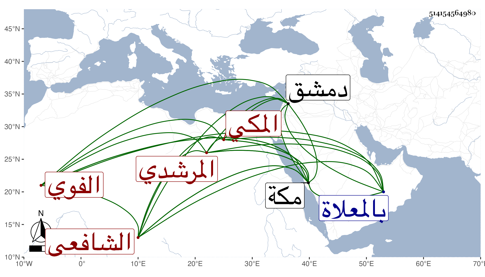

0902Sakhawi.DawLamic.ITO20230111-ara1.EIS1600.514154564980
Biography ID: 514154564980
أحمد بن إبراهيم بن أحمد بن أبي بكر بن عبد الوهاب الشهاب ولقبه شيخنا بالضياء أبو العباس المرشدي الفوي المكي الشافعي سبط الجمال محمد بن عبد الله بن عبد المعطي وأخو الجمال محمد والجلال عبد الواحد . ولد سنة ثلاث وستين وسبعمائة بمكة وحضر بها في الخامسة على العز بن جماعة منسكه الكبير وتساعياته الأربعين وغير ذلك وعلى اليافعي الصحيح وسمع على الزين بن القاري جزء ابن الطلاية وعلى جده لأمه صحيح ابن حبان وغير ذلك وعلى زينب ابنة أحمد بن ميمون التونسي والأختين أم الحسن وأم الحسين المسماة كل منهما فاطمة ابنة أحمد بن الرضي الطبري في آخرين بل ذكر أنه سمع بالقاهرة من ابن الشهيد نظم السيرة له وبدمشق من المحب الصامت الكثير وأجاز له بن رافع والأسنائي والبهاء السبكي والكمال بن حبيب وعمر بن إبراهيم النقبي وابن قواليح وابن الهبل وابن النجم والصلاح بن أبي عمر وابن أميلة وأبو البقاء السبكي وغيرهم وحدث سمع منه الفضلاء كالتقي بن فهد وولديه والأبي والبرهان بن ظهيرة . ومات في ظهر يوم الجمعة رابع ذي القعدة سنة اثنتين وثلاثين بمكة بعد أن أضر وصلى عليه بعد صلاة العصر ثم دفن بالمعلاة وكانت جنازته حافلة وهو ممن ذكره شيخنا في معجمه باختصار وقال أجاز لأولادي بإفادة المراكشي وقال في أنبائه أنه حدث قبل موته بسنة بشرح السنة للبغوي بإجازته من بعض شيوخه ومن قبل موته بشهر بالشمائل بإجازته من الصلاح . وأرخ مولده سنة ستين ووفاته يوم الخميس والأول فيهما أثبت . وذكره المقريزي في عقوده باختصار .
